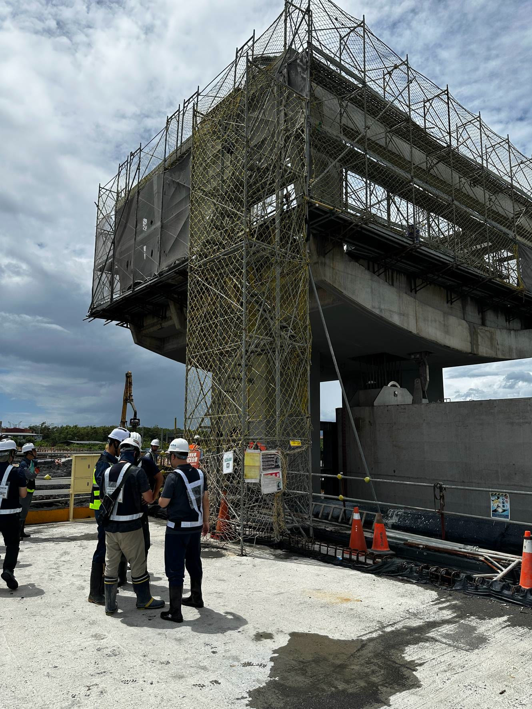
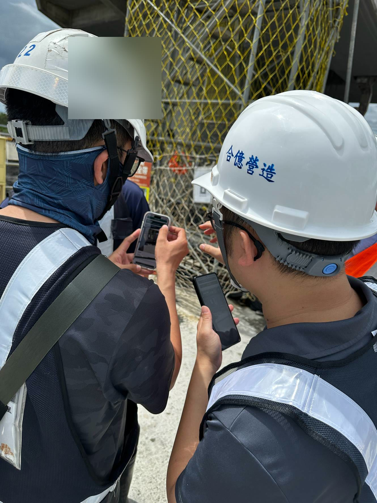
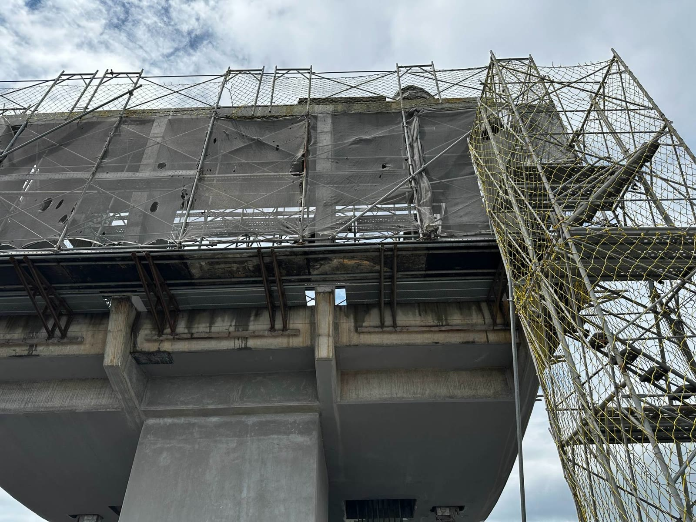
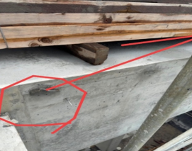
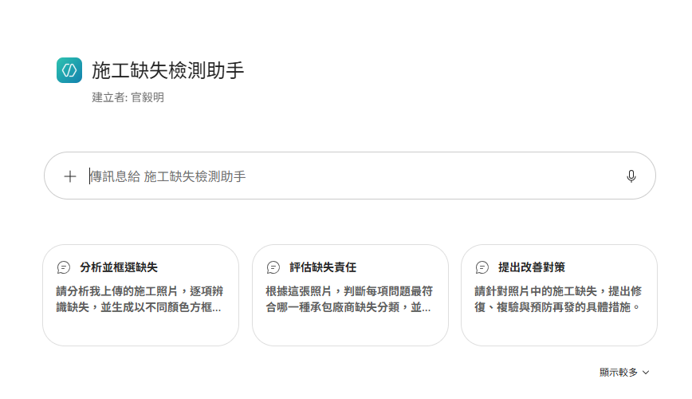
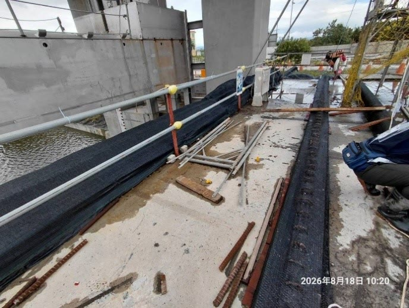
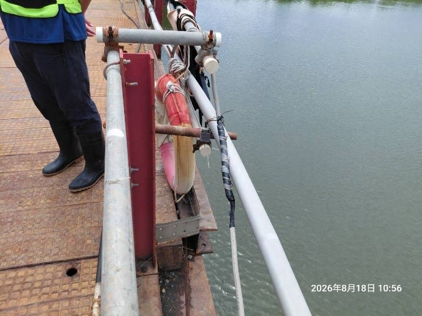
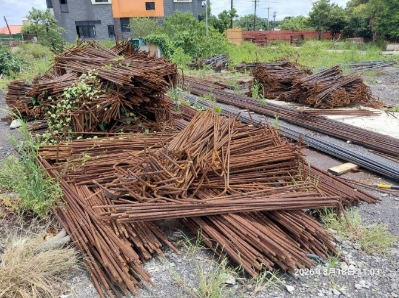
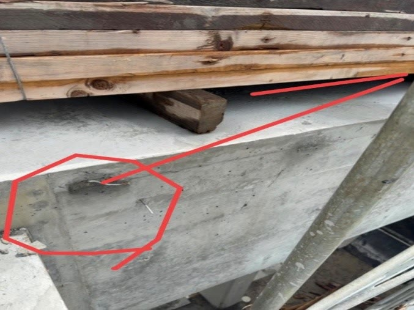

規劃期中、期末、基本設計成果與審查紀錄，動輒數百頁，查核期間有限
流量、水位、堤頂、經費散在不同版本與附錄，需要逐一比對
由零散疑點串成查核方向，形成可追溯的審計意見雛型
本部 Copilot：文件摘要、會議彙整、意見草擬
長文件逐版比對、程式與 3D 模型撰寫
資料庫、公式驗算、比對表
NLSC 圖資、DTM 地形、3D 互動場景
設計五結防潮閘門改善工程缺乏益本比分析選擇最佳方案，最終採保守數值設計，致益本比偏低；未將工區外堤防高程不足併入建設計畫解決，潛藏溢堤風險；對於須仰賴冬山河兩岸抽水站降低洪災，尚乏抽水功能減損等極限情形之量化評估，允宜檢討改進，確保完工後達成長期防洪禦潮功能及保障冬山河沿岸地區安全
現況 Q25 直接轉為未來 Q10，論證偏弱，應比較方案
✓ 方向確認採 1,088 cms 高標準，堤防須全段加高並編列經費
✓ 方向確認閘門通洪 750 對計畫 775 cms，缺口仰賴抽水站
✓ 方向確認| Q10 情境 | 洪峰 | 施作前 | 施作後 |
|---|---|---|---|
| 一般治理 2020 | 775 | 2.91 | 2.79 |
| 目標年 2070 | 1,088 | 3.17 | 2.92 |
| 關閘禦潮 | 750 | — | 2.46† |
設計五結防潮閘門改善工程缺乏益本比分析選擇最佳方案，最終採保守數值設計，致益本比偏低；未將工區外堤防高程不足併入建設計畫解決，潛藏溢堤風險；對於須仰賴冬山河兩岸抽水站降低洪災，尚乏抽水功能減損等極限情形之量化評估，允宜檢討改進，確保完工後達成長期防洪禦潮功能及保障冬山河沿岸地區安全
缺乏益本比分析選擇最佳方案，最終採保守數值設計，致益本比偏低
防洪設計水位採 EL+3.00 m，比較 Q10 計畫洪水 856、775 cms 及目標年 2070 年 1,088 cms，閘內最高水位分別為 EL+2.69、EL+2.68 及 EL+2.70，皆能達到防洪保護標準。
除前開可計效益外，另已檢討落實友善環境、推動文化觀光、促進稅收增加等不可計效益之評估。嗣後依審核通知意見注意於評估成果納入益本比檢討內容。
未將工區外堤防高程不足併入建設計畫解決，潛藏溢堤風險
已依審核通知意見納入後續建設計畫參考。
須仰賴冬山河兩岸抽水站降低洪災，尚乏抽水功能減損等極限情形之量化評估
兩岸抽水站減排 25 cms 之彈性做法，為增設 30 cms 之冬山河主流抽水站，以增加防洪之安全。
| 議題 | 專家意見 | 審計處理 |
| 設計流量依據 | 現況 Q25 直接轉未來 Q10，論證偏弱 | 審核通知 一(二) |
| 堤防完整性 | 目標年（2070）1,088 cms 下堤頂缺口 22 公分，須全段加高 | 審核通知 一(三) |
| 閘門與抽水站 | 通洪 750 對 775 cms，缺口仰賴抽水站 | 審核通知 一(四) |
| 水理參數 | N 值前後不一、未律定驗證 | 待補證 |
| 模擬情境 | 聚焦保護標準；強調未加高堤防之風險 | 修正模型解讀 |
補充不可計效益評估，嗣後納入益本比檢討
納入後續建設計畫參考
增設 30 cms 冬山河主流抽水站
手機鏡頭即時影像，雙向語音與文字訊息
審計人員圈選、加箭頭，現場人員依標記查看
依指示拍攝缺失部位，照片回傳供查核
4 位數配對、短效連線憑證，金鑰不放程式庫





已上架本部 Copilot



| 🗺️ 3D GIS 淹水模組 | 📱 手機遠端協助平台 | 📷 施工品質缺失檢測助手 | |
|---|---|---|---|
| 用途 | 規劃設計審查、防洪風險空間篩檢 | 高處、涉水等難以直達處遠距查看 | 現場照片快速辨識疑似缺失 |
| 何時用 | 大型水利工程、多版報告需交叉比對 | 現場人員在場，審計人員無法直達 | 現場抽查、照片初篩 |
| 資安控管 | 機關資料分級使用，原始報告不上公開網頁 | 4 位數配對、短效憑證，金鑰不放程式庫 | 金鑰僅存使用者瀏覽器，照片僅於分析時傳送 |
| 定位 | 不取代正式水理模式 | 不取代必要之現地查證 | AI 結果須人工複核 |
AI 擴大查核視野
專業 守住證據底線
審計 推動公共治理